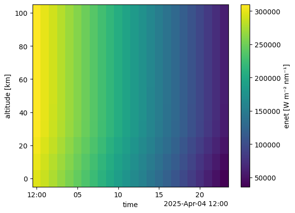
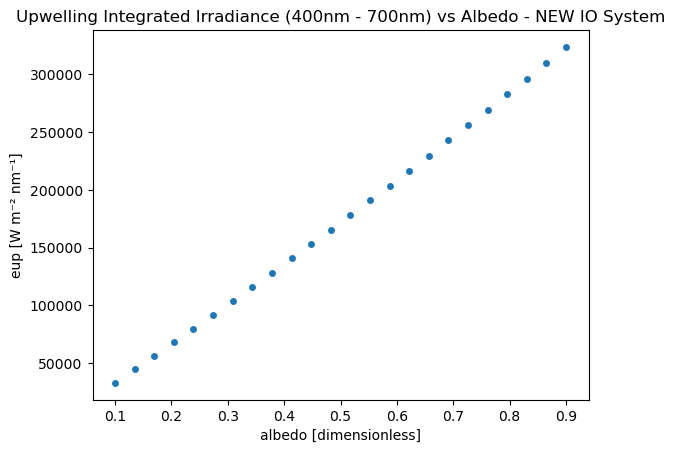

Quickstart: Surface Albedo#
Surface albedo testing with pyradtran.
# Import PyRadtran components using NEW IO system
from pyradtran.interface import PyRadtranAccessor # This should register the accessor automatically
import matplotlib.pyplot as plt
import numpy as np
import xarray as xr
from pathlib import Path
import pandas as pd
# Load the configuration from the YAML file
config_path = Path('config/albedo.yaml')
import logging
# change to "DEBUG" if you want to see more output
logging.getLogger('pyradtran').setLevel(logging.CRITICAL)
N_timesteps = 24
# stationary simulation at constant altitude, latitude, and longitude but with varying time
ds = xr.Dataset(
coords={
'time' : pd.date_range('2025-04-04T12:00:00', periods=N_timesteps, freq='s'),
'latitude' : ('time', [51.3406321] * N_timesteps),
'longitude' : ('time', [12.3747329] * N_timesteps),
'altitude' : ('altitude', np.arange(0, 110, 10) ),
},
data_vars={
'albedo' : ('time', np.linspace(0.1, 0.9, N_timesteps)),
}
)
# Run a spectral simulation for a single point using NEW IO system
ds_sim = ds.pyradtran.run_uvspec(
config_path=config_path,
return_dataset=True,
save_to_file=True,
albedo_var='albedo',
)
print("\nSimulation complete!")
print(f"Dataset variables: {list(ds_sim.data_vars.keys())}")
print(f"Dataset coordinates: {list(ds_sim.coords.keys())}")
print(f"Dataset shape: {ds_sim.dims}")
2025-07-22 00:18:50,106 - pyradtran.interface - INFO - Altitude found as coordinate - using 11 levels for zout: [ 0 10 20 30 40 50 60 70 80 90 100]
2025-07-22 00:18:50,108 - pyradtran.interface - INFO - Auto-generating output path: work/xarray_example_20250722_001850.nc
2025-07-22 00:18:50,121 - pyradtran.interface - INFO - Running 24 simulations across time/location points...
2025-07-22 00:18:50,145 - pyradtran.core - DEBUG - Generated input file: /projekt_agmwend/home_rad/Joshua/HALO-AC3_Arctic_leads/sim/pyradtran/notebooks/work/uvspec_20250404_120000_qqvopa75.inp
2025-07-22 00:18:50,148 - pyradtran.core - DEBUG - Running uvspec: /opt/libradtran/2.0.4/bin/uvspec < uvspec_20250404_120000_qqvopa75.inp > uvspec_20250404_120000_qqvopa75.out
2025-07-22 00:18:51,718 - pyradtran.core - DEBUG - uvspec finished successfully for uvspec_20250404_120000_qqvopa75.inp.
2025-07-22 00:18:51,720 - pyradtran.io - DEBUG - Initialized parser with columns: ['zout', 'lambda', 'sza', 'edir', 'eglo', 'edn', 'eup', 'enet', 'albedo']
2025-07-22 00:18:51,721 - pyradtran.io - DEBUG - Original user columns: ['lambda', 'sza', 'edir', 'eglo', 'edn', 'eup', 'enet', 'albedo']
2025-07-22 00:18:51,723 - pyradtran.io - INFO - Detected output type: integrated_multi_altitude
2025-07-22 00:18:51,727 - pyradtran.interface - DEBUG - Successfully processed simulation 1/24 for time 2025-04-04T12:00:00.000000000
2025-07-22 00:18:51,728 - pyradtran.core - DEBUG - Generated input file: /projekt_agmwend/home_rad/Joshua/HALO-AC3_Arctic_leads/sim/pyradtran/notebooks/work/uvspec_20250404_120001_3ekxvzwl.inp
2025-07-22 00:18:51,729 - pyradtran.core - DEBUG - Running uvspec: /opt/libradtran/2.0.4/bin/uvspec < uvspec_20250404_120001_3ekxvzwl.inp > uvspec_20250404_120001_3ekxvzwl.out
2025-07-22 00:18:53,350 - pyradtran.core - DEBUG - uvspec finished successfully for uvspec_20250404_120001_3ekxvzwl.inp.
2025-07-22 00:18:53,352 - pyradtran.io - DEBUG - Initialized parser with columns: ['zout', 'lambda', 'sza', 'edir', 'eglo', 'edn', 'eup', 'enet', 'albedo']
2025-07-22 00:18:53,353 - pyradtran.io - DEBUG - Original user columns: ['lambda', 'sza', 'edir', 'eglo', 'edn', 'eup', 'enet', 'albedo']
2025-07-22 00:18:53,355 - pyradtran.io - INFO - Detected output type: integrated_multi_altitude
2025-07-22 00:18:53,357 - pyradtran.interface - DEBUG - Successfully processed simulation 2/24 for time 2025-04-04T12:00:01.000000000
2025-07-22 00:18:53,358 - pyradtran.core - DEBUG - Generated input file: /projekt_agmwend/home_rad/Joshua/HALO-AC3_Arctic_leads/sim/pyradtran/notebooks/work/uvspec_20250404_120002_awzp02k2.inp
2025-07-22 00:18:53,360 - pyradtran.core - DEBUG - Running uvspec: /opt/libradtran/2.0.4/bin/uvspec < uvspec_20250404_120002_awzp02k2.inp > uvspec_20250404_120002_awzp02k2.out
2025-07-22 00:18:54,980 - pyradtran.core - DEBUG - uvspec finished successfully for uvspec_20250404_120002_awzp02k2.inp.
2025-07-22 00:18:54,982 - pyradtran.io - DEBUG - Initialized parser with columns: ['zout', 'lambda', 'sza', 'edir', 'eglo', 'edn', 'eup', 'enet', 'albedo']
2025-07-22 00:18:54,983 - pyradtran.io - DEBUG - Original user columns: ['lambda', 'sza', 'edir', 'eglo', 'edn', 'eup', 'enet', 'albedo']
2025-07-22 00:18:54,985 - pyradtran.io - INFO - Detected output type: integrated_multi_altitude
2025-07-22 00:18:54,987 - pyradtran.interface - DEBUG - Successfully processed simulation 3/24 for time 2025-04-04T12:00:02.000000000
2025-07-22 00:18:54,989 - pyradtran.core - DEBUG - Generated input file: /projekt_agmwend/home_rad/Joshua/HALO-AC3_Arctic_leads/sim/pyradtran/notebooks/work/uvspec_20250404_120003_acmx1t53.inp
2025-07-22 00:18:54,990 - pyradtran.core - DEBUG - Running uvspec: /opt/libradtran/2.0.4/bin/uvspec < uvspec_20250404_120003_acmx1t53.inp > uvspec_20250404_120003_acmx1t53.out
2025-07-22 00:18:56,660 - pyradtran.core - DEBUG - uvspec finished successfully for uvspec_20250404_120003_acmx1t53.inp.
2025-07-22 00:18:56,662 - pyradtran.io - DEBUG - Initialized parser with columns: ['zout', 'lambda', 'sza', 'edir', 'eglo', 'edn', 'eup', 'enet', 'albedo']
2025-07-22 00:18:56,663 - pyradtran.io - DEBUG - Original user columns: ['lambda', 'sza', 'edir', 'eglo', 'edn', 'eup', 'enet', 'albedo']
2025-07-22 00:18:56,664 - pyradtran.io - INFO - Detected output type: integrated_multi_altitude
2025-07-22 00:18:56,666 - pyradtran.interface - DEBUG - Successfully processed simulation 4/24 for time 2025-04-04T12:00:03.000000000
2025-07-22 00:18:56,667 - pyradtran.core - DEBUG - Generated input file: /projekt_agmwend/home_rad/Joshua/HALO-AC3_Arctic_leads/sim/pyradtran/notebooks/work/uvspec_20250404_120004_y0y3ai2p.inp
2025-07-22 00:18:56,668 - pyradtran.core - DEBUG - Running uvspec: /opt/libradtran/2.0.4/bin/uvspec < uvspec_20250404_120004_y0y3ai2p.inp > uvspec_20250404_120004_y0y3ai2p.out
2025-07-22 00:18:58,288 - pyradtran.core - DEBUG - uvspec finished successfully for uvspec_20250404_120004_y0y3ai2p.inp.
2025-07-22 00:18:58,290 - pyradtran.io - DEBUG - Initialized parser with columns: ['zout', 'lambda', 'sza', 'edir', 'eglo', 'edn', 'eup', 'enet', 'albedo']
2025-07-22 00:18:58,292 - pyradtran.io - DEBUG - Original user columns: ['lambda', 'sza', 'edir', 'eglo', 'edn', 'eup', 'enet', 'albedo']
2025-07-22 00:18:58,294 - pyradtran.io - INFO - Detected output type: integrated_multi_altitude
2025-07-22 00:18:58,295 - pyradtran.interface - DEBUG - Successfully processed simulation 5/24 for time 2025-04-04T12:00:04.000000000
2025-07-22 00:18:58,297 - pyradtran.core - DEBUG - Generated input file: /projekt_agmwend/home_rad/Joshua/HALO-AC3_Arctic_leads/sim/pyradtran/notebooks/work/uvspec_20250404_120005_yz4wz026.inp
2025-07-22 00:18:58,298 - pyradtran.core - DEBUG - Running uvspec: /opt/libradtran/2.0.4/bin/uvspec < uvspec_20250404_120005_yz4wz026.inp > uvspec_20250404_120005_yz4wz026.out
2025-07-22 00:18:59,918 - pyradtran.core - DEBUG - uvspec finished successfully for uvspec_20250404_120005_yz4wz026.inp.
2025-07-22 00:18:59,920 - pyradtran.io - DEBUG - Initialized parser with columns: ['zout', 'lambda', 'sza', 'edir', 'eglo', 'edn', 'eup', 'enet', 'albedo']
2025-07-22 00:18:59,921 - pyradtran.io - DEBUG - Original user columns: ['lambda', 'sza', 'edir', 'eglo', 'edn', 'eup', 'enet', 'albedo']
2025-07-22 00:18:59,923 - pyradtran.io - INFO - Detected output type: integrated_multi_altitude
2025-07-22 00:18:59,926 - pyradtran.interface - DEBUG - Successfully processed simulation 6/24 for time 2025-04-04T12:00:05.000000000
2025-07-22 00:18:59,927 - pyradtran.core - DEBUG - Generated input file: /projekt_agmwend/home_rad/Joshua/HALO-AC3_Arctic_leads/sim/pyradtran/notebooks/work/uvspec_20250404_120006_jk_ar6kk.inp
2025-07-22 00:18:59,928 - pyradtran.core - DEBUG - Running uvspec: /opt/libradtran/2.0.4/bin/uvspec < uvspec_20250404_120006_jk_ar6kk.inp > uvspec_20250404_120006_jk_ar6kk.out
2025-07-22 00:19:01,498 - pyradtran.core - DEBUG - uvspec finished successfully for uvspec_20250404_120006_jk_ar6kk.inp.
2025-07-22 00:19:01,500 - pyradtran.io - DEBUG - Initialized parser with columns: ['zout', 'lambda', 'sza', 'edir', 'eglo', 'edn', 'eup', 'enet', 'albedo']
2025-07-22 00:19:01,501 - pyradtran.io - DEBUG - Original user columns: ['lambda', 'sza', 'edir', 'eglo', 'edn', 'eup', 'enet', 'albedo']
2025-07-22 00:19:01,503 - pyradtran.io - INFO - Detected output type: integrated_multi_altitude
2025-07-22 00:19:01,505 - pyradtran.interface - DEBUG - Successfully processed simulation 7/24 for time 2025-04-04T12:00:06.000000000
2025-07-22 00:19:01,507 - pyradtran.core - DEBUG - Generated input file: /projekt_agmwend/home_rad/Joshua/HALO-AC3_Arctic_leads/sim/pyradtran/notebooks/work/uvspec_20250404_120007_120enumb.inp
2025-07-22 00:19:01,508 - pyradtran.core - DEBUG - Running uvspec: /opt/libradtran/2.0.4/bin/uvspec < uvspec_20250404_120007_120enumb.inp > uvspec_20250404_120007_120enumb.out
2025-07-22 00:19:03,127 - pyradtran.core - DEBUG - uvspec finished successfully for uvspec_20250404_120007_120enumb.inp.
2025-07-22 00:19:03,140 - pyradtran.io - DEBUG - Initialized parser with columns: ['zout', 'lambda', 'sza', 'edir', 'eglo', 'edn', 'eup', 'enet', 'albedo']
2025-07-22 00:19:03,168 - pyradtran.io - DEBUG - Original user columns: ['lambda', 'sza', 'edir', 'eglo', 'edn', 'eup', 'enet', 'albedo']
2025-07-22 00:19:03,204 - pyradtran.io - INFO - Detected output type: integrated_multi_altitude
2025-07-22 00:19:03,252 - pyradtran.interface - DEBUG - Successfully processed simulation 8/24 for time 2025-04-04T12:00:07.000000000
2025-07-22 00:19:03,253 - pyradtran.core - DEBUG - Generated input file: /projekt_agmwend/home_rad/Joshua/HALO-AC3_Arctic_leads/sim/pyradtran/notebooks/work/uvspec_20250404_120008_71i132g2.inp
2025-07-22 00:19:03,268 - pyradtran.core - DEBUG - Running uvspec: /opt/libradtran/2.0.4/bin/uvspec < uvspec_20250404_120008_71i132g2.inp > uvspec_20250404_120008_71i132g2.out
2025-07-22 00:19:04,908 - pyradtran.core - DEBUG - uvspec finished successfully for uvspec_20250404_120008_71i132g2.inp.
2025-07-22 00:19:04,910 - pyradtran.io - DEBUG - Initialized parser with columns: ['zout', 'lambda', 'sza', 'edir', 'eglo', 'edn', 'eup', 'enet', 'albedo']
2025-07-22 00:19:04,911 - pyradtran.io - DEBUG - Original user columns: ['lambda', 'sza', 'edir', 'eglo', 'edn', 'eup', 'enet', 'albedo']
2025-07-22 00:19:04,913 - pyradtran.io - INFO - Detected output type: integrated_multi_altitude
2025-07-22 00:19:04,915 - pyradtran.interface - DEBUG - Successfully processed simulation 9/24 for time 2025-04-04T12:00:08.000000000
2025-07-22 00:19:04,917 - pyradtran.core - DEBUG - Generated input file: /projekt_agmwend/home_rad/Joshua/HALO-AC3_Arctic_leads/sim/pyradtran/notebooks/work/uvspec_20250404_120009_qrhi60lk.inp
2025-07-22 00:19:04,919 - pyradtran.core - DEBUG - Running uvspec: /opt/libradtran/2.0.4/bin/uvspec < uvspec_20250404_120009_qrhi60lk.inp > uvspec_20250404_120009_qrhi60lk.out
2025-07-22 00:19:06,488 - pyradtran.core - DEBUG - uvspec finished successfully for uvspec_20250404_120009_qrhi60lk.inp.
2025-07-22 00:19:06,490 - pyradtran.io - DEBUG - Initialized parser with columns: ['zout', 'lambda', 'sza', 'edir', 'eglo', 'edn', 'eup', 'enet', 'albedo']
2025-07-22 00:19:06,492 - pyradtran.io - DEBUG - Original user columns: ['lambda', 'sza', 'edir', 'eglo', 'edn', 'eup', 'enet', 'albedo']
2025-07-22 00:19:06,494 - pyradtran.io - INFO - Detected output type: integrated_multi_altitude
2025-07-22 00:19:06,496 - pyradtran.interface - DEBUG - Successfully processed simulation 10/24 for time 2025-04-04T12:00:09.000000000
2025-07-22 00:19:06,498 - pyradtran.core - DEBUG - Generated input file: /projekt_agmwend/home_rad/Joshua/HALO-AC3_Arctic_leads/sim/pyradtran/notebooks/work/uvspec_20250404_120010_pheordf9.inp
2025-07-22 00:19:06,499 - pyradtran.core - DEBUG - Running uvspec: /opt/libradtran/2.0.4/bin/uvspec < uvspec_20250404_120010_pheordf9.inp > uvspec_20250404_120010_pheordf9.out
2025-07-22 00:19:08,068 - pyradtran.core - DEBUG - uvspec finished successfully for uvspec_20250404_120010_pheordf9.inp.
2025-07-22 00:19:08,070 - pyradtran.io - DEBUG - Initialized parser with columns: ['zout', 'lambda', 'sza', 'edir', 'eglo', 'edn', 'eup', 'enet', 'albedo']
2025-07-22 00:19:08,071 - pyradtran.io - DEBUG - Original user columns: ['lambda', 'sza', 'edir', 'eglo', 'edn', 'eup', 'enet', 'albedo']
2025-07-22 00:19:08,073 - pyradtran.io - INFO - Detected output type: integrated_multi_altitude
2025-07-22 00:19:08,075 - pyradtran.interface - DEBUG - Successfully processed simulation 11/24 for time 2025-04-04T12:00:10.000000000
2025-07-22 00:19:08,076 - pyradtran.core - DEBUG - Generated input file: /projekt_agmwend/home_rad/Joshua/HALO-AC3_Arctic_leads/sim/pyradtran/notebooks/work/uvspec_20250404_120011_9569h2ar.inp
2025-07-22 00:19:08,077 - pyradtran.core - DEBUG - Running uvspec: /opt/libradtran/2.0.4/bin/uvspec < uvspec_20250404_120011_9569h2ar.inp > uvspec_20250404_120011_9569h2ar.out
2025-07-22 00:19:09,647 - pyradtran.core - DEBUG - uvspec finished successfully for uvspec_20250404_120011_9569h2ar.inp.
2025-07-22 00:19:09,649 - pyradtran.io - DEBUG - Initialized parser with columns: ['zout', 'lambda', 'sza', 'edir', 'eglo', 'edn', 'eup', 'enet', 'albedo']
2025-07-22 00:19:09,650 - pyradtran.io - DEBUG - Original user columns: ['lambda', 'sza', 'edir', 'eglo', 'edn', 'eup', 'enet', 'albedo']
2025-07-22 00:19:09,652 - pyradtran.io - INFO - Detected output type: integrated_multi_altitude
2025-07-22 00:19:09,654 - pyradtran.interface - DEBUG - Successfully processed simulation 12/24 for time 2025-04-04T12:00:11.000000000
2025-07-22 00:19:09,655 - pyradtran.core - DEBUG - Generated input file: /projekt_agmwend/home_rad/Joshua/HALO-AC3_Arctic_leads/sim/pyradtran/notebooks/work/uvspec_20250404_120012_nl19jk0l.inp
2025-07-22 00:19:09,656 - pyradtran.core - DEBUG - Running uvspec: /opt/libradtran/2.0.4/bin/uvspec < uvspec_20250404_120012_nl19jk0l.inp > uvspec_20250404_120012_nl19jk0l.out
2025-07-22 00:19:11,276 - pyradtran.core - DEBUG - uvspec finished successfully for uvspec_20250404_120012_nl19jk0l.inp.
2025-07-22 00:19:11,279 - pyradtran.io - DEBUG - Initialized parser with columns: ['zout', 'lambda', 'sza', 'edir', 'eglo', 'edn', 'eup', 'enet', 'albedo']
2025-07-22 00:19:11,280 - pyradtran.io - DEBUG - Original user columns: ['lambda', 'sza', 'edir', 'eglo', 'edn', 'eup', 'enet', 'albedo']
2025-07-22 00:19:11,282 - pyradtran.io - INFO - Detected output type: integrated_multi_altitude
2025-07-22 00:19:11,284 - pyradtran.interface - DEBUG - Successfully processed simulation 13/24 for time 2025-04-04T12:00:12.000000000
2025-07-22 00:19:11,286 - pyradtran.core - DEBUG - Generated input file: /projekt_agmwend/home_rad/Joshua/HALO-AC3_Arctic_leads/sim/pyradtran/notebooks/work/uvspec_20250404_120013_bw4lr4em.inp
2025-07-22 00:19:11,288 - pyradtran.core - DEBUG - Running uvspec: /opt/libradtran/2.0.4/bin/uvspec < uvspec_20250404_120013_bw4lr4em.inp > uvspec_20250404_120013_bw4lr4em.out
2025-07-22 00:19:12,858 - pyradtran.core - DEBUG - uvspec finished successfully for uvspec_20250404_120013_bw4lr4em.inp.
2025-07-22 00:19:12,860 - pyradtran.io - DEBUG - Initialized parser with columns: ['zout', 'lambda', 'sza', 'edir', 'eglo', 'edn', 'eup', 'enet', 'albedo']
2025-07-22 00:19:12,861 - pyradtran.io - DEBUG - Original user columns: ['lambda', 'sza', 'edir', 'eglo', 'edn', 'eup', 'enet', 'albedo']
2025-07-22 00:19:12,863 - pyradtran.io - INFO - Detected output type: integrated_multi_altitude
2025-07-22 00:19:12,865 - pyradtran.interface - DEBUG - Successfully processed simulation 14/24 for time 2025-04-04T12:00:13.000000000
2025-07-22 00:19:12,867 - pyradtran.core - DEBUG - Generated input file: /projekt_agmwend/home_rad/Joshua/HALO-AC3_Arctic_leads/sim/pyradtran/notebooks/work/uvspec_20250404_120014_qyjkj69v.inp
2025-07-22 00:19:12,869 - pyradtran.core - DEBUG - Running uvspec: /opt/libradtran/2.0.4/bin/uvspec < uvspec_20250404_120014_qyjkj69v.inp > uvspec_20250404_120014_qyjkj69v.out
2025-07-22 00:19:14,439 - pyradtran.core - DEBUG - uvspec finished successfully for uvspec_20250404_120014_qyjkj69v.inp.
2025-07-22 00:19:14,441 - pyradtran.io - DEBUG - Initialized parser with columns: ['zout', 'lambda', 'sza', 'edir', 'eglo', 'edn', 'eup', 'enet', 'albedo']
2025-07-22 00:19:14,442 - pyradtran.io - DEBUG - Original user columns: ['lambda', 'sza', 'edir', 'eglo', 'edn', 'eup', 'enet', 'albedo']
2025-07-22 00:19:14,444 - pyradtran.io - INFO - Detected output type: integrated_multi_altitude
2025-07-22 00:19:14,446 - pyradtran.interface - DEBUG - Successfully processed simulation 15/24 for time 2025-04-04T12:00:14.000000000
2025-07-22 00:19:14,448 - pyradtran.core - DEBUG - Generated input file: /projekt_agmwend/home_rad/Joshua/HALO-AC3_Arctic_leads/sim/pyradtran/notebooks/work/uvspec_20250404_120015_fo2w9kj4.inp
2025-07-22 00:19:14,449 - pyradtran.core - DEBUG - Running uvspec: /opt/libradtran/2.0.4/bin/uvspec < uvspec_20250404_120015_fo2w9kj4.inp > uvspec_20250404_120015_fo2w9kj4.out
2025-07-22 00:19:16,018 - pyradtran.core - DEBUG - uvspec finished successfully for uvspec_20250404_120015_fo2w9kj4.inp.
2025-07-22 00:19:16,020 - pyradtran.io - DEBUG - Initialized parser with columns: ['zout', 'lambda', 'sza', 'edir', 'eglo', 'edn', 'eup', 'enet', 'albedo']
2025-07-22 00:19:16,022 - pyradtran.io - DEBUG - Original user columns: ['lambda', 'sza', 'edir', 'eglo', 'edn', 'eup', 'enet', 'albedo']
2025-07-22 00:19:16,023 - pyradtran.io - INFO - Detected output type: integrated_multi_altitude
2025-07-22 00:19:16,025 - pyradtran.interface - DEBUG - Successfully processed simulation 16/24 for time 2025-04-04T12:00:15.000000000
2025-07-22 00:19:16,026 - pyradtran.core - DEBUG - Generated input file: /projekt_agmwend/home_rad/Joshua/HALO-AC3_Arctic_leads/sim/pyradtran/notebooks/work/uvspec_20250404_120016_1atsdh2_.inp
2025-07-22 00:19:16,028 - pyradtran.core - DEBUG - Running uvspec: /opt/libradtran/2.0.4/bin/uvspec < uvspec_20250404_120016_1atsdh2_.inp > uvspec_20250404_120016_1atsdh2_.out
2025-07-22 00:19:17,698 - pyradtran.core - DEBUG - uvspec finished successfully for uvspec_20250404_120016_1atsdh2_.inp.
2025-07-22 00:19:17,700 - pyradtran.io - DEBUG - Initialized parser with columns: ['zout', 'lambda', 'sza', 'edir', 'eglo', 'edn', 'eup', 'enet', 'albedo']
2025-07-22 00:19:17,701 - pyradtran.io - DEBUG - Original user columns: ['lambda', 'sza', 'edir', 'eglo', 'edn', 'eup', 'enet', 'albedo']
2025-07-22 00:19:17,704 - pyradtran.io - INFO - Detected output type: integrated_multi_altitude
2025-07-22 00:19:17,706 - pyradtran.interface - DEBUG - Successfully processed simulation 17/24 for time 2025-04-04T12:00:16.000000000
2025-07-22 00:19:17,708 - pyradtran.core - DEBUG - Generated input file: /projekt_agmwend/home_rad/Joshua/HALO-AC3_Arctic_leads/sim/pyradtran/notebooks/work/uvspec_20250404_120017_ppgck6t7.inp
2025-07-22 00:19:17,709 - pyradtran.core - DEBUG - Running uvspec: /opt/libradtran/2.0.4/bin/uvspec < uvspec_20250404_120017_ppgck6t7.inp > uvspec_20250404_120017_ppgck6t7.out
2025-07-22 00:19:19,279 - pyradtran.core - DEBUG - uvspec finished successfully for uvspec_20250404_120017_ppgck6t7.inp.
2025-07-22 00:19:19,281 - pyradtran.io - DEBUG - Initialized parser with columns: ['zout', 'lambda', 'sza', 'edir', 'eglo', 'edn', 'eup', 'enet', 'albedo']
2025-07-22 00:19:19,282 - pyradtran.io - DEBUG - Original user columns: ['lambda', 'sza', 'edir', 'eglo', 'edn', 'eup', 'enet', 'albedo']
2025-07-22 00:19:19,284 - pyradtran.io - INFO - Detected output type: integrated_multi_altitude
2025-07-22 00:19:19,286 - pyradtran.interface - DEBUG - Successfully processed simulation 18/24 for time 2025-04-04T12:00:17.000000000
2025-07-22 00:19:19,288 - pyradtran.core - DEBUG - Generated input file: /projekt_agmwend/home_rad/Joshua/HALO-AC3_Arctic_leads/sim/pyradtran/notebooks/work/uvspec_20250404_120018_nebx6t0n.inp
2025-07-22 00:19:19,289 - pyradtran.core - DEBUG - Running uvspec: /opt/libradtran/2.0.4/bin/uvspec < uvspec_20250404_120018_nebx6t0n.inp > uvspec_20250404_120018_nebx6t0n.out
2025-07-22 00:19:20,858 - pyradtran.core - DEBUG - uvspec finished successfully for uvspec_20250404_120018_nebx6t0n.inp.
2025-07-22 00:19:20,860 - pyradtran.io - DEBUG - Initialized parser with columns: ['zout', 'lambda', 'sza', 'edir', 'eglo', 'edn', 'eup', 'enet', 'albedo']
2025-07-22 00:19:20,862 - pyradtran.io - DEBUG - Original user columns: ['lambda', 'sza', 'edir', 'eglo', 'edn', 'eup', 'enet', 'albedo']
2025-07-22 00:19:20,863 - pyradtran.io - INFO - Detected output type: integrated_multi_altitude
2025-07-22 00:19:20,865 - pyradtran.interface - DEBUG - Successfully processed simulation 19/24 for time 2025-04-04T12:00:18.000000000
2025-07-22 00:19:20,867 - pyradtran.core - DEBUG - Generated input file: /projekt_agmwend/home_rad/Joshua/HALO-AC3_Arctic_leads/sim/pyradtran/notebooks/work/uvspec_20250404_120019_hku_ztn9.inp
2025-07-22 00:19:20,868 - pyradtran.core - DEBUG - Running uvspec: /opt/libradtran/2.0.4/bin/uvspec < uvspec_20250404_120019_hku_ztn9.inp > uvspec_20250404_120019_hku_ztn9.out
2025-07-22 00:19:22,437 - pyradtran.core - DEBUG - uvspec finished successfully for uvspec_20250404_120019_hku_ztn9.inp.
2025-07-22 00:19:22,439 - pyradtran.io - DEBUG - Initialized parser with columns: ['zout', 'lambda', 'sza', 'edir', 'eglo', 'edn', 'eup', 'enet', 'albedo']
2025-07-22 00:19:22,441 - pyradtran.io - DEBUG - Original user columns: ['lambda', 'sza', 'edir', 'eglo', 'edn', 'eup', 'enet', 'albedo']
2025-07-22 00:19:22,442 - pyradtran.io - INFO - Detected output type: integrated_multi_altitude
2025-07-22 00:19:22,445 - pyradtran.interface - DEBUG - Successfully processed simulation 20/24 for time 2025-04-04T12:00:19.000000000
2025-07-22 00:19:22,446 - pyradtran.core - DEBUG - Generated input file: /projekt_agmwend/home_rad/Joshua/HALO-AC3_Arctic_leads/sim/pyradtran/notebooks/work/uvspec_20250404_120020__vl81dn6.inp
2025-07-22 00:19:22,447 - pyradtran.core - DEBUG - Running uvspec: /opt/libradtran/2.0.4/bin/uvspec < uvspec_20250404_120020__vl81dn6.inp > uvspec_20250404_120020__vl81dn6.out
2025-07-22 00:19:24,067 - pyradtran.core - DEBUG - uvspec finished successfully for uvspec_20250404_120020__vl81dn6.inp.
2025-07-22 00:19:24,069 - pyradtran.io - DEBUG - Initialized parser with columns: ['zout', 'lambda', 'sza', 'edir', 'eglo', 'edn', 'eup', 'enet', 'albedo']
2025-07-22 00:19:24,071 - pyradtran.io - DEBUG - Original user columns: ['lambda', 'sza', 'edir', 'eglo', 'edn', 'eup', 'enet', 'albedo']
2025-07-22 00:19:24,072 - pyradtran.io - INFO - Detected output type: integrated_multi_altitude
2025-07-22 00:19:24,076 - pyradtran.interface - DEBUG - Successfully processed simulation 21/24 for time 2025-04-04T12:00:20.000000000
2025-07-22 00:19:24,077 - pyradtran.core - DEBUG - Generated input file: /projekt_agmwend/home_rad/Joshua/HALO-AC3_Arctic_leads/sim/pyradtran/notebooks/work/uvspec_20250404_120021_ndyyasjh.inp
2025-07-22 00:19:24,078 - pyradtran.core - DEBUG - Running uvspec: /opt/libradtran/2.0.4/bin/uvspec < uvspec_20250404_120021_ndyyasjh.inp > uvspec_20250404_120021_ndyyasjh.out
2025-07-22 00:19:25,647 - pyradtran.core - DEBUG - uvspec finished successfully for uvspec_20250404_120021_ndyyasjh.inp.
2025-07-22 00:19:25,649 - pyradtran.io - DEBUG - Initialized parser with columns: ['zout', 'lambda', 'sza', 'edir', 'eglo', 'edn', 'eup', 'enet', 'albedo']
2025-07-22 00:19:25,650 - pyradtran.io - DEBUG - Original user columns: ['lambda', 'sza', 'edir', 'eglo', 'edn', 'eup', 'enet', 'albedo']
2025-07-22 00:19:25,652 - pyradtran.io - INFO - Detected output type: integrated_multi_altitude
2025-07-22 00:19:25,654 - pyradtran.interface - DEBUG - Successfully processed simulation 22/24 for time 2025-04-04T12:00:21.000000000
2025-07-22 00:19:25,656 - pyradtran.core - DEBUG - Generated input file: /projekt_agmwend/home_rad/Joshua/HALO-AC3_Arctic_leads/sim/pyradtran/notebooks/work/uvspec_20250404_120022_ug4wjn1q.inp
2025-07-22 00:19:25,657 - pyradtran.core - DEBUG - Running uvspec: /opt/libradtran/2.0.4/bin/uvspec < uvspec_20250404_120022_ug4wjn1q.inp > uvspec_20250404_120022_ug4wjn1q.out
2025-07-22 00:19:27,277 - pyradtran.core - DEBUG - uvspec finished successfully for uvspec_20250404_120022_ug4wjn1q.inp.
2025-07-22 00:19:27,279 - pyradtran.io - DEBUG - Initialized parser with columns: ['zout', 'lambda', 'sza', 'edir', 'eglo', 'edn', 'eup', 'enet', 'albedo']
2025-07-22 00:19:27,281 - pyradtran.io - DEBUG - Original user columns: ['lambda', 'sza', 'edir', 'eglo', 'edn', 'eup', 'enet', 'albedo']
2025-07-22 00:19:27,283 - pyradtran.io - INFO - Detected output type: integrated_multi_altitude
2025-07-22 00:19:27,285 - pyradtran.interface - DEBUG - Successfully processed simulation 23/24 for time 2025-04-04T12:00:22.000000000
2025-07-22 00:19:27,286 - pyradtran.core - DEBUG - Generated input file: /projekt_agmwend/home_rad/Joshua/HALO-AC3_Arctic_leads/sim/pyradtran/notebooks/work/uvspec_20250404_120023_7t8bqugx.inp
2025-07-22 00:19:27,288 - pyradtran.core - DEBUG - Running uvspec: /opt/libradtran/2.0.4/bin/uvspec < uvspec_20250404_120023_7t8bqugx.inp > uvspec_20250404_120023_7t8bqugx.out
2025-07-22 00:19:28,857 - pyradtran.core - DEBUG - uvspec finished successfully for uvspec_20250404_120023_7t8bqugx.inp.
2025-07-22 00:19:28,859 - pyradtran.io - DEBUG - Initialized parser with columns: ['zout', 'lambda', 'sza', 'edir', 'eglo', 'edn', 'eup', 'enet', 'albedo']
2025-07-22 00:19:28,860 - pyradtran.io - DEBUG - Original user columns: ['lambda', 'sza', 'edir', 'eglo', 'edn', 'eup', 'enet', 'albedo']
2025-07-22 00:19:28,861 - pyradtran.io - INFO - Detected output type: integrated_multi_altitude
2025-07-22 00:19:28,864 - pyradtran.interface - DEBUG - Successfully processed simulation 24/24 for time 2025-04-04T12:00:23.000000000
2025-07-22 00:19:28,886 - pyradtran.interface - INFO - Successfully completed 24/24 simulations
2025-07-22 00:19:29,207 - pyradtran.interface - INFO - Results saved to work/xarray_example_20250722_001850.nc
Simulation complete!
Dataset variables: ['sza', 'edir', 'eglo', 'edn', 'eup', 'enet', 'albedo']
Dataset coordinates: ['time', 'latitude', 'longitude', 'altitude']
Dataset shape: FrozenMappingWarningOnValuesAccess({'time': 24, 'altitude': 11})
ds_sim['enet'].plot(y='altitude')
<matplotlib.collections.QuadMesh at 0x7fb16b651760>

Results#
Comparison of simulated radiation with different albedo configurations.
ds_sim.sel(altitude=0).plot.scatter(
x = 'albedo',
y = 'eup'
)
plt.title('Upwelling Integrated Irradiance (400nm - 700nm) vs Albedo - NEW IO System')
Text(0.5, 1.0, 'Upwelling Integrated Irradiance (400nm - 700nm) vs Albedo - NEW IO System')
